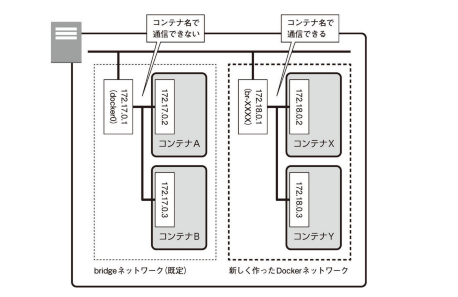
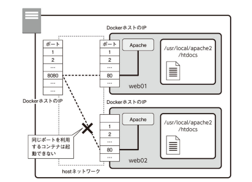

docker network lsコマンドで確認できる．ubuntu@ip-172-31-39-72:~$ docker network ls
NETWORK ID NAME DRIVER SCOPE
0470037995b8 bridge bridge local
eea371a81d9a host host local
ecb1fa9b5b68 none null local
docker runするときにネットワークのオプションを指定しない場合，これが使われる．-pオプションで，どのコンテナと通信するのかを決めるdocker run -dit --name web01 -p 8080:80 httpd:2.4
docker run -dit --name web02 -p 8081:80 httpd:2.4
docker run -dit --name web01 -p 8080:80 httpd:2.4
docker run -dit --name web02 -p 8081:80 httpd:2.4
ipコマンドやifconfigコマンドなどを実行して確認する
docker execを使ってコンテナ内でIPアドレスを調べるコマンドを実行する方法ipコマンドもifconfigコマンドも入っていないdocker container inspectコマンドを使う方法
ubuntu@ip-xxx-xxx-xxx-xxx:~$ docker container inspect --format="{{.NetworkSettings.IPAddress}}" web01
172.17.0.2
--formatオプションで指定する
ubuntu@ip-172-31-39-72:~$ ifconfig
docker0: flags=4163<UP,BROADCAST,RUNNING,MULTICAST> mtu 1500
inet 172.17.0.1 netmask 255.255.0.0 broadcast 172.17.255.255
inet6 fe80::42:d1ff:fefc:c0ab prefixlen 64 scopeid 0x20<link>
ether 02:42:d1:fc:c0:ab txqueuelen 0 (Ethernet)
RX packets 3 bytes 100 (100.0 B)
RX errors 0 dropped 0 overruns 0 frame 0
TX packets 10 bytes 772 (772.0 B)
TX errors 0 dropped 0 overruns 0 carrier 0 collisions 0
-pオプションは，IPマスカレードのポート転送設定をしている-pオプションが設定されていなくても可能
curlコマンドを使うからubuntu@ip-172-31-39-72:~$ docker run --rm -it ubuntu /bin/bash
Unable to find image 'ubuntu:latest' locally
latest: Pulling from library/ubuntu
a70d879fa598: Pull complete
c4394a92d1f8: Pull complete
10e6159c56c0: Pull complete
Digest: sha256:3c9c713e0979e9bd6061ed52ac1e9e1f246c9495aa063619d9d695fb8039aa1f
Status: Downloaded newer image for ubuntu:latest
root@0de66f1a5531:/#
ip，ping，curlを使うroot@0de66f1a5531:/# apt update
root@0de66f1a5531:/# apt -y upgrade
root@0de66f1a5531:/# apt install -y iproute2 iputils-ping curl
root@0de66f1a5531:/# ip addr
1: lo: <LOOPBACK,UP,LOWER_UP> mtu 65536 qdisc noqueue state UNKNOWN group default qlen 1000
link/loopback 00:00:00:00:00:00 brd 00:00:00:00:00:00
inet 127.0.0.1/8 scope host lo
valid_lft forever preferred_lft forever
8: eth0@if9: <BROADCAST,MULTICAST,UP,LOWER_UP> mtu 1500 qdisc noqueue state UP group default
link/ether 02:42:ac:11:00:04 brd ff:ff:ff:ff:ff:ff link-netnsid 0
inet 172.17.0.4/16 brd 172.17.255.255 scope global eth0
valid_lft forever preferred_lft forever
pingで疎通確認する
root@0de66f1a5531:/# ping -c 4 172.17.0.2
PING 172.17.0.2 (172.17.0.2) 56(84) bytes of data.
64 bytes from 172.17.0.2: icmp_seq=1 ttl=64 time=0.092 ms
64 bytes from 172.17.0.2: icmp_seq=2 ttl=64 time=0.057 ms
64 bytes from 172.17.0.2: icmp_seq=3 ttl=64 time=0.056 ms
64 bytes from 172.17.0.2: icmp_seq=4 ttl=64 time=0.054 ms
--- 172.17.0.2 ping statistics ---
4 packets transmitted, 4 received, 0% packet loss, time 3068ms
rtt min/avg/max/mdev = 0.054/0.064/0.092/0.015 ms
root@0de66f1a5531:/# ping -c 4 172.17.0.3
PING 172.17.0.3 (172.17.0.3) 56(84) bytes of data.
64 bytes from 172.17.0.3: icmp_seq=1 ttl=64 time=0.076 ms
64 bytes from 172.17.0.3: icmp_seq=2 ttl=64 time=0.061 ms
64 bytes from 172.17.0.3: icmp_seq=3 ttl=64 time=0.054 ms
64 bytes from 172.17.0.3: icmp_seq=4 ttl=64 time=0.067 ms
--- 172.17.0.3 ping statistics ---
4 packets transmitted, 4 received, 0% packet loss, time 3063ms
rtt min/avg/max/mdev = 0.054/0.064/0.076/0.008 ms
root@0de66f1a5531:/# curl http://172.17.0.2/
<html><body><h1>It works!</h1></body></html>
root@0de66f1a5531:/# curl http://172.17.0.3/
<html><body><h1>It works!</h1></body></html>
root@0de66f1a5531:/# ping -c 4 web01
ping: web01: Name or service not known
exitで終了--linkオプションを指定する方法 (非推奨)
--nameで指定したコンテナ名で互いに通信できるdocker network createコマンドを使って作るdocker network create [network name]
--subnetや--iprangeなどのオプションを指定することもできる (必須ではない)．
docker network create mydockernet
ubuntu@ip-xxx-xxx-xxx-xxx:~$ docker network ls
NETWORK ID NAME DRIVER SCOPE
470a2dc530d0 bridge bridge local
eea371a81d9a host host local
8eefa9b57e17 mydockernet bridge local
ecb1fa9b5b68 none null local
ubuntu@ip-xxx-xxx-xxx-xxx:~$ docker network inspect mydockernet
[
{
"Name": "mydockernet",
"Id": "8eefa9b57e1704d08020ae06e6fac97555d4513fa271f97edeb0e388fddaf462",
"Created": "2021-04-17T05:58:30.946953053Z",
"Scope": "local",
"Driver": "bridge",
"EnableIPv6": false,
"IPAM": {
"Driver": "default",
"Options": {},
"Config": [
{
"Subnet": "172.18.0.0/16",
"Gateway": "172.18.0.1"
}
]
},
"Internal": false,
"Attachable": false,
"Ingress": false,
"ConfigFrom": {
"Network": ""
},
"ConfigOnly": false,
"Containers": {},
"Options": {},
"Labels": {}
}
]
docker runするときに，--netオプションを指定する．docker stop web01 web02
docker rm web01 web02
docker run -dit --name web01 -p 8080:80 --net mydockernet httpd:2.4
docker run -dit --name web02 -p 8081:80 --net mydockernet httpd:2.4
ubuntu@ip-xxx-xxx-xxx-xxx:~$ docker network inspect mydockernet
[
{
"Name": "mydockernet",
"Id": "8eefa9b57e1704d08020ae06e6fac97555d4513fa271f97edeb0e388fddaf462",
"Created": "2021-04-17T05:58:30.946953053Z",
"Scope": "local",
"Driver": "bridge",
"EnableIPv6": false,
"IPAM": {
"Driver": "default",
"Options": {},
"Config": [
{
"Subnet": "172.18.0.0/16",
"Gateway": "172.18.0.1"
}
]
},
"Internal": false,
"Attachable": false,
"Ingress": false,
"ConfigFrom": {
"Network": ""
},
"ConfigOnly": false,
"Containers": {
"114c87c0a8fdb7fcc25d33e9398b2d1eb54204fc2f0796945ca5ad258635fdff": {
"Name": "web01",
"EndpointID": "c25ef6ebd64de0eac2aa80b2bb4ae2436c68764d5cce57faa1326046a1704500",
"MacAddress": "02:42:ac:12:00:02",
"IPv4Address": "172.18.0.2/16",
"IPv6Address": ""
},
"21755ec6f7220dcbdb2f953afaab9a6a762fc3f376aece04267b83ee3a1799a7": {
"Name": "web02",
"EndpointID": "d1009d823369c18571abe85c9a29bc7620390d8711a863c63cf60a1791225499",
"MacAddress": "02:42:ac:12:00:03",
"IPv4Address": "172.18.0.3/16",
"IPv6Address": ""
}
},
"Options": {},
"Labels": {}
}
]
--net mydockernetを付けて，mydockernetに接続するubuntu@ip-xxx-xxx-xxx-xxx:~$ docker run --rm -it --net mydockernet ubuntu /bin/bash
root@fb973493aa8b:/#
root@fb973493aa8b:/# apt update
root@fb973493aa8b:/# apt -y upgrade
root@fb973493aa8b:/# apt -y install iproute2 iputils-ping curl
root@fb973493aa8b:/# ping -c 4 web01
PING web01 (172.18.0.2) 56(84) bytes of data.
64 bytes from web01.mydockernet (172.18.0.2): icmp_seq=1 ttl=64 time=0.090 ms
64 bytes from web01.mydockernet (172.18.0.2): icmp_seq=2 ttl=64 time=0.065 ms
64 bytes from web01.mydockernet (172.18.0.2): icmp_seq=3 ttl=64 time=0.061 ms
64 bytes from web01.mydockernet (172.18.0.2): icmp_seq=4 ttl=64 time=0.070 ms
--- web01 ping statistics ---
4 packets transmitted, 4 received, 0% packet loss, time 3080ms
rtt min/avg/max/mdev = 0.061/0.071/0.090/0.011 ms
root@fb973493aa8b:/# curl http://web01/
<html><body><h1>It works!</h1></body></html>
root@fb973493aa8b:/# cat /etc/resolv.conf
search ap-northeast-3.compute.internal
nameserver 127.0.0.11
options edns0 ndots:0
exitコマンドdocker network disconnectコマンドdocker stop web01 web02
docker rm web01 web02
docker network rm mydockernet
ubuntu@ip-172-31-39-72:~$ docker network ls
NETWORK ID NAME DRIVER SCOPE
470a2dc530d0 bridge bridge local
eea371a81d9a host host local
ecb1fa9b5b68 none null local
-pオプションを指定することはできず，すべてのポートがDockerコンテナに流れる．docker runの後に--net hostを指定する．
docker network connectでhostネットワークを指定する
docker runの際に--net noneを指定する．
docker network disconnectでネットワークから切断-pオプションは関係ない